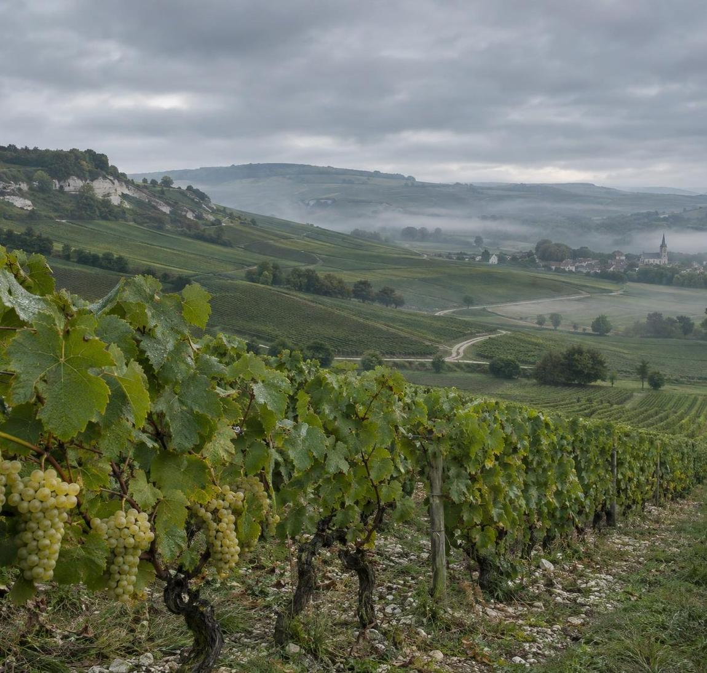
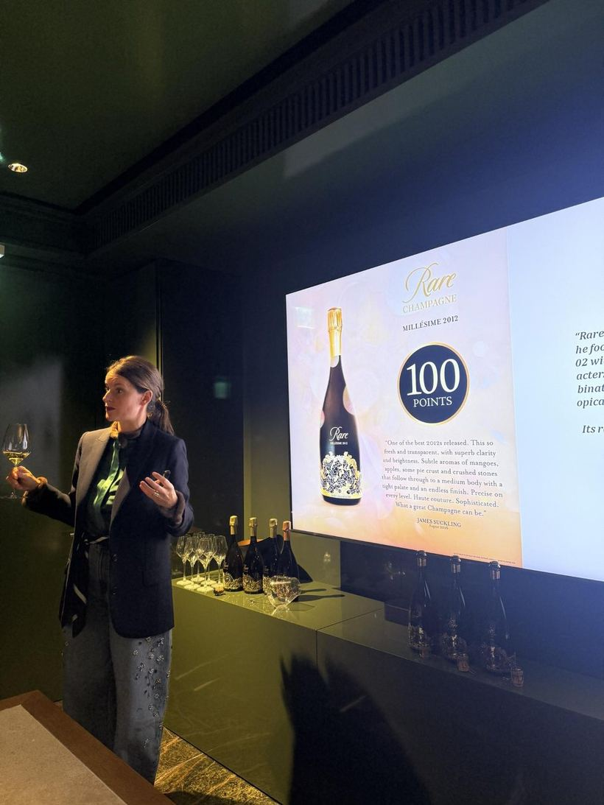
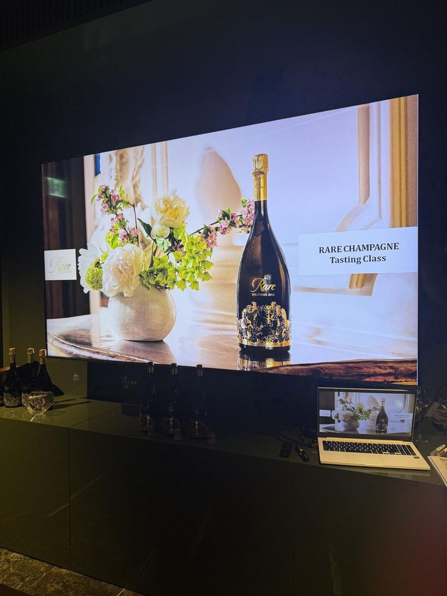

<title>유진 생일 Rare 2008</title>
<meta name="claude:viewport-fit-sides" content="cover">
<link rel="stylesheet" href="https://fonts.googleapis.com/css2?family=Bodoni+Moda:ital,opsz,wght@0,6..96,400..700;1,6..96,400..700&family=IBM+Plex+Sans+KR:wght@300;400;500&family=Noto+Serif+KR:wght@400;600;700&display=swap">
<style>
/* Layout: 화면 하나가 무대. 글은 왼쪽 단에 걸고, 오른쪽에는 숫자·타임라인·∞ 같은 그림 하나만 둔다. */
:root {
  color-scheme: dark;
  --glass: #0b1310;        /* 샴페인 병 유리의 검녹색: 바탕 */
  --glass-2: #16251e;      /* 빛 받은 유리 */
  --glass-3: #101c17;
  --chalk: #ece8dc;        /* 샹파뉴의 석회(분필): 본문 */
  --chalk-dim: #a3ab9f;    /* 보조 글 */
  --gold: #d8b565;         /* 샴페인 금: 강조 */
  --gold-soft: #f1dfad;    /* 밝은 금: 하이라이트 */
  --gold-veil: rgba(216, 181, 101, .22);
  --rose: #e6aa9c;         /* 로제: 피노 누아·생일 포인트 */
  --rule: rgba(236, 232, 220, .17);
  --shade: rgba(0, 0, 0, .5);
  --font-display: "Bodoni Moda", "Noto Serif KR", "Nanum Myeongjo", "Times New Roman", serif;
  --font-serif: "Noto Serif KR", "Nanum Myeongjo", "AppleMyungjo", "Batang", serif;
  --font-body: "IBM Plex Sans KR", "Apple SD Gothic Neo", "Malgun Gothic", "Noto Sans KR", system-ui, sans-serif;
}

[hidden] { display: none !important; }
html { box-sizing: border-box; }   /* 위아래 안전 영역 여백을 높이에 포함시켜 바닥 띠가 화면 밖으로 밀리지 않게 */
html, body { height: 100%; }
body {
  margin: 0;
  background: var(--glass);
  color: var(--chalk);
  font-family: var(--font-body);
  overflow: hidden;
}

.deck {
  --u: clamp(12px, min(1.75vw, 3.1vh), 44px);
  --pad: clamp(0px, 4.2vw, 96px);
  position: relative;
  height: 100%;
  display: grid;
  grid-template-rows: auto minmax(0, 1fr) auto;
  padding-left: max(16px, env(safe-area-inset-left, 0px));
  padding-right: max(16px, env(safe-area-inset-right, 0px));
  font-size: var(--u);
  line-height: 1.6;
  word-break: keep-all; overflow-wrap: break-word;
  background:
    radial-gradient(120% 90% at 82% 0%, var(--glass-2) 0%, transparent 62%),
    radial-gradient(90% 70% at 0% 100%, var(--glass-3) 0%, transparent 58%),
    var(--glass);
  -webkit-user-select: none; user-select: none;
  cursor: default;
}
@media (max-aspect-ratio: 1/1) {
  .deck { --u: clamp(14px, 4.1vw, 24px); --pad: 0px; }
}

#bubbles { position: absolute; inset: 0; width: 100%; height: 100%; z-index: 0; pointer-events: none; }

/* ── 머리·바닥 ─────────────────────────── */
.top {
  grid-row: 1;
  position: relative; z-index: 2;
  display: flex; justify-content: space-between; gap: 1em;
  padding: 1.3em var(--pad) .5em;
  font-size: max(.54em, 10.5px);
  letter-spacing: .2em;
  color: var(--chalk-dim);
}
.top span:last-child { font-family: var(--font-display); letter-spacing: .14em; text-align: right; }

.bar {
  grid-row: 3;
  position: relative; z-index: 2;
  display: flex; align-items: center; gap: .8em;
  padding: .35em var(--pad) .7em;
}
.sync {
  display: inline-flex; align-items: center; gap: .55em;
  height: clamp(30px, 1.6em, 42px); padding: 0 .95em;
  font: inherit; font-size: max(.54em, 11px); letter-spacing: .04em; white-space: nowrap;
  color: var(--chalk-dim); background: transparent;
  border: 1px solid var(--rule); border-radius: 999px; cursor: pointer;
  transition: color .2s, border-color .2s;
}
.sync i { width: .6em; height: .6em; border-radius: 50%; background: var(--chalk-dim); }
.sync.on { color: var(--chalk); }
.sync.live { border-color: var(--gold); }
.sync.live i { background: var(--gold-soft); animation: pulse 2.2s ease-out infinite; }
.sync:focus-visible { outline: 2px solid var(--gold-soft); outline-offset: 3px; }
.bar .progress { flex: 1 1 0; min-width: 0; }
.bar > button, .bar > .counter { flex: none; }
.sync .s { display: none; }
@media (max-width: 520px) {
  .sync { padding: 0 .75em; gap: .45em; }
  .sync .l { display: none; }
  .sync .s { display: inline; }
  .bar { gap: .55em; }
}
.progress { height: 1px; background: var(--rule); position: relative; }
.progress i {
  position: absolute; left: 0; top: -1px; height: 3px; width: 100%;
  background: linear-gradient(90deg, var(--gold), var(--gold-soft));
  transform: scaleX(0); transform-origin: left;
  transition: transform .7s cubic-bezier(.2, .7, .2, 1);
}
.counter {
  font-family: var(--font-display); font-variant-numeric: tabular-nums lining-nums;
  font-size: max(.7em, 12px); color: var(--chalk-dim); letter-spacing: .08em;
  min-width: 4.2em; text-align: right;
}
.nav {
  width: clamp(36px, 1.75em, 50px); height: clamp(36px, 1.75em, 50px);
  display: grid; place-items: center;
  background: transparent; color: var(--chalk-dim);
  border: 1px solid var(--rule); border-radius: 50%;
  cursor: pointer; padding: 0;
  transition: color .2s, border-color .2s, background .2s;
}
.nav:hover { color: var(--gold-soft); border-color: var(--gold); }
.nav:focus-visible, .cheer:focus-visible { outline: 2px solid var(--gold-soft); outline-offset: 3px; }
.nav:disabled { opacity: .3; cursor: default; }
.nav svg { width: 44%; height: 44%; fill: none; stroke: currentColor; stroke-width: 1.6; stroke-linecap: round; stroke-linejoin: round; }

/* ── QR 덮개(진행자만) ─────────────────── */
.qr-ov {
  position: absolute; inset: 0; z-index: 5;
  display: grid; place-items: center;
  padding: 1em max(16px, env(safe-area-inset-right, 0px)) 1em max(16px, env(safe-area-inset-left, 0px));
  background: var(--glass);
}
.qr-card { display: grid; justify-items: center; gap: .9em; text-align: center; }
.qr-box {
  width: min(52vh, 64vw); aspect-ratio: 1;
  padding: 3.5%; box-sizing: border-box;
  background: var(--chalk); color: var(--glass);
  border-radius: .5em; box-shadow: 0 1em 3em var(--shade);
}
.qr-box svg { display: block; width: 100%; height: 100%; }
.qr-cap { font-family: var(--font-serif); font-size: 1.25em; color: var(--chalk); }
.qr-actions { display: flex; gap: .8em; flex-wrap: wrap; justify-content: center; }
.qr-actions button {
  font: inherit; font-size: max(.8em, 13px); letter-spacing: .08em;
  min-height: 44px; padding: 0 1.5em;
  color: var(--chalk); background: transparent;
  border: 1px solid var(--rule); border-radius: 999px; cursor: pointer;
}
.qr-actions button.go { color: var(--glass); background: var(--gold); border-color: var(--gold); }
.qr-actions button:focus-visible { outline: 2px solid var(--gold-soft); outline-offset: 3px; }
.nav.qr svg { width: 52%; height: 52%; }

/* ── 무대와 슬라이드 ────────────────────── */
.stage { grid-row: 2; position: relative; min-height: 0; z-index: 1; }
.slide {
  position: absolute; inset: 0;
  padding: 0 var(--pad);
  opacity: 0; visibility: hidden;
  transition: opacity .45s ease, visibility 0s linear .45s;
  overflow: hidden;
}
.fit {
  position: relative; z-index: 1;
  display: flex; flex-direction: column;
  width: 100%; min-height: 100%;
  transform-origin: 0 0;
}
.slide.has-side .fit { width: 57%; }
@media (max-aspect-ratio: 1/1) { .slide.has-side .fit { width: 100%; } }
.slide.active { opacity: 1; visibility: visible; transition: opacity .7s ease .12s, visibility 0s; }
.body { flex: 1 0 auto; display: grid; align-content: center; gap: 1.5em; padding-block: .6em; }
.src {
  flex: none; padding-block: .5em .2em;
  font-size: max(.47em, 9.5px); letter-spacing: .03em;
  color: var(--chalk-dim); opacity: .8;
}

/* 들어올 때 차례로 올라오는 요소 */
.slide.active .in {
  animation: rise .85s cubic-bezier(.2, .7, .2, 1) backwards;
  animation-delay: calc(var(--i, 0) * 120ms + 160ms);
}
@keyframes rise { from { opacity: 0; transform: translateY(.9em); } to { opacity: 1; transform: none; } }

/* 누를 때마다 하나씩 나타나는 요소 */
.step { opacity: 0; transform: translateY(.7em); transition: opacity .7s ease, transform .8s cubic-bezier(.2, .7, .2, 1); }
.step.on { opacity: 1; transform: none; }

/* ── 글자 ──────────────────────────────── */
.eyebrow {
  font-size: max(.6em, 11px); letter-spacing: .24em; font-weight: 500;
  color: var(--gold); margin: 0;
}
h1, h2, h3, p { margin: 0; }
h2 {
  font-family: var(--font-serif); font-weight: 600;
  font-size: 2.15em; line-height: 1.25; letter-spacing: -.012em;
  text-wrap: balance;
}
.lead { max-width: 33em; font-size: 1.04em; }
.dim { color: var(--chalk-dim); }
.num { font-family: var(--font-display); font-variant-numeric: lining-nums tabular-nums; font-weight: 500; }
.head { display: grid; gap: .7em; }
.cols { display: grid; grid-template-columns: minmax(0, 1.15fr) minmax(0, .85fr); gap: 3em; align-items: center; }
@media (max-aspect-ratio: 1/1) { .cols { grid-template-columns: minmax(0, 1fr); gap: 1.2em; } }
.lines { display: grid; gap: .75em; max-width: 30em; }
.lines p { padding-left: 1.1em; position: relative; }
.lines p::before { content: ""; position: absolute; left: 0; top: .72em; width: .5em; height: 1px; background: var(--gold); }

/* ── 1. 표지 ───────────────────────────── */
.cover .body { align-content: end; gap: 1em; padding-bottom: 5vh; position: relative; }
.cover-title { display: grid; gap: 0; font-weight: 400; }
.ct-name { font-family: var(--font-display); font-size: 2.5em; line-height: 1.1; letter-spacing: .01em; }
.ct-year {
  font-size: min(11.5em, 27vw, 34vh); line-height: .95; font-weight: 500; letter-spacing: -.01em;
  background: linear-gradient(100deg, var(--gold) 0%, var(--gold-soft) 38%, var(--gold) 62%, var(--gold-soft) 100%);
  background-size: 220% 100%;
  -webkit-background-clip: text; background-clip: text; color: transparent;
}
.slide.active .ct-year { animation: rise .85s cubic-bezier(.2,.7,.2,1) 400ms backwards, shimmer 7s linear 1.2s infinite; }
@keyframes shimmer { from { background-position: 0% 0; } to { background-position: -220% 0; } }
.ct-sub { font-family: var(--font-serif); font-size: 1.45em; }
.ct-sub i { font-family: var(--font-display); color: var(--gold-soft); }
.ct-hint { font-size: max(.56em, 10.5px); letter-spacing: .08em; color: var(--chalk-dim); margin-top: 1.2em; }
.cover-inf { position: absolute; right: -4%; top: 2%; width: min(64%, 46em); opacity: .2; pointer-events: none; }
@media (max-aspect-ratio: 1/1) { .cover-inf { width: 112%; right: -14%; top: 8%; } }

/* ∞ */
.inf path { fill: none; stroke-linecap: round; stroke-linejoin: round; }
.inf-draw { stroke: var(--gold); stroke-width: 1.4; stroke-dasharray: var(--len, 525); stroke-dashoffset: 0; }
.slide.active .inf-draw { animation: draw 2.6s cubic-bezier(.5, .1, .2, 1) .25s backwards; }
.inf-run { stroke: var(--gold-soft); stroke-width: 2.4; opacity: 0;
  stroke-dasharray: calc(var(--len, 525) * .07) calc(var(--len, 525) * .93); }
.slide.active .inf-run { animation: run 5.5s linear 2.4s infinite, fadein 1s ease 2.4s forwards; }
@keyframes draw { from { stroke-dashoffset: var(--len, 525); } }
@keyframes run { from { stroke-dashoffset: 0; } to { stroke-dashoffset: calc(var(--len, 525) * -1); } }
@keyframes fadein { to { opacity: 1; } }

/* ── 2. 14번 ───────────────────────────── */
.figure { display: grid; justify-items: start; gap: .2em; }
.figure .big { font-size: min(13em, 42vw, 40vh); line-height: .9; color: var(--gold); font-variant-numeric: lining-nums proportional-nums; letter-spacing: -.02em; }
.figure .cap { font-size: .8em; color: var(--chalk-dim); letter-spacing: .04em; }

/* ── 3. 빈티지 산책 ─────────────────────── */
.vgrid { display: grid; grid-template-columns: repeat(7, minmax(0, 1fr)); gap: 1.5em 1.2em; }
@media (max-aspect-ratio: 1/1) { .vgrid { grid-template-columns: repeat(3, minmax(0, 1fr)); gap: .8em .9em; } }
.v {
  border-top: 1px solid var(--rule); padding-top: .55em;
  display: grid; gap: .1em; align-content: start;
  transform-origin: 30% 60%;
  transition: opacity .8s ease, transform .9s cubic-bezier(.2, .7, .2, 1), border-color .8s;
}
.v .y { font-size: 1.75em; line-height: 1.05; }
.v .n { font-family: var(--font-display); font-style: italic; font-size: .84em; line-height: 1.25; color: var(--gold-soft); min-height: 1.25em; }
.v .k { font-size: max(.54em, 10px); color: var(--chalk-dim); line-height: 1.35; }
.at-1 .v:not(.hero) { opacity: .26; }
.at-1 .v.hero { border-color: var(--gold); transform: scale(1.22); }
.at-1 .v.hero .y { color: var(--gold); text-shadow: 0 0 1.1em var(--gold-veil); }
.v-note { font-family: var(--font-serif); font-size: 1.25em; }
.v-note i { font-family: var(--font-display); color: var(--gold-soft); }

/* ── 4. 2008년 ─────────────────────────── */
.stats { display: grid; grid-template-columns: repeat(3, auto); justify-content: start; gap: min(2.3em, 6vw); }
.stat { display: grid; gap: .1em; }
.stat .big { font-size: min(3.3em, 11.5vw); line-height: 1; color: var(--gold-soft); white-space: nowrap; }
.stat .big small { font-family: var(--font-body); font-size: .28em; font-weight: 400; color: var(--chalk-dim); margin-left: .3em; letter-spacing: .04em; }
.stat .lab { font-size: max(.66em, 11px); color: var(--chalk-dim); letter-spacing: .04em; }
.verdicts { display: grid; grid-template-columns: repeat(2, minmax(0, auto)); justify-content: start; gap: 1em 3.5em; }
@media (max-aspect-ratio: 1/1) { .verdicts { grid-template-columns: minmax(0, 1fr); } }
.verdict q { font-family: var(--font-serif); font-weight: 600; font-size: 1.4em; quotes: "“" "”"; }
.verdict span { display: block; font-size: max(.66em, 11px); color: var(--chalk-dim); margin-top: .2em; }

/* ── 5·9. 타임라인 ─────────────────────── */
.tl { position: relative; padding: 4.6em 0 4.4em; margin-inline: .6em; }
.tl-track { position: relative; height: 1px; background: var(--rule); }
.tl-fill { position: absolute; top: -2px; height: 5px; transform: scaleX(0); transform-origin: left; transition: transform 1.5s cubic-bezier(.3, .6, .2, 1); }
.tl-fill.a { left: 0; width: 76.92%; background: var(--chalk-dim); }
.tl-fill.b { left: 76.92%; width: 23.08%; background: linear-gradient(90deg, var(--gold), var(--gold-soft)); }
.at-1 .tl-fill.a, .at-2 .tl-fill.b { transform: scaleX(1); }
.tl-tick { position: absolute; top: -4px; width: 1px; height: 9px; background: var(--rule); }
.tl-dot { position: absolute; top: 0; width: .7em; height: .7em; margin: -.35em 0 0 -.35em; border-radius: 50%; background: var(--chalk); }
.tl-dot.gold { background: var(--gold-soft); box-shadow: 0 0 0 .35em var(--gold-veil); }
.tl-pos { position: absolute; }
.tl-pos.up { top: 0; }
.tl-pos.bot { bottom: 0; }
.tl-lab { display: grid; gap: 0; line-height: 1.3; }
.tl-lab b { font-size: 1.7em; font-weight: 500; }
.tl-lab span { font-size: max(.68em, 11px); color: var(--chalk-dim); }
.tl-pos.endr { right: 0; text-align: right; }
.tl-pos.mid { right: 23.08%; text-align: right; }
.tl-pos.mid .tl-lab { padding-right: .6em; border-right: 1px solid var(--rule); }
.tl-plus { position: absolute; top: .2em; right: 0; width: 23.08%; text-align: center; }
.tl-plus b { font-family: var(--font-serif); font-size: min(1.9em, 7vw); color: var(--gold); white-space: nowrap; }

/* ── 6. 무한 ───────────────────────────── */
.infinite .body { justify-items: center; text-align: center; gap: .9em; }
.inf-main { width: min(27em, 84vw, 62vh); height: auto; display: block; }
.inf-word { font-family: var(--font-display); letter-spacing: .5em; font-size: .95em; color: var(--gold-soft); padding-left: .5em; }
.inf-kr { font-family: var(--font-serif); font-weight: 700; font-size: 3.4em; line-height: 1.1; }
.inf-quote { font-family: var(--font-serif); font-size: 1.3em; max-width: 24em; }
.inf-quote span { display: block; font-family: var(--font-body); font-size: max(.52em, 11px); color: var(--chalk-dim); margin-top: .5em; }
.inf-three { font-size: .95em; letter-spacing: .1em; color: var(--gold-soft); }
.inf-three small { display: block; color: var(--chalk-dim); letter-spacing: .02em; font-size: max(.72em, 10.5px); margin-top: .4em; }

/* ── 7·10. 세 갈래 ─────────────────────── */
.tri { display: grid; grid-template-columns: repeat(3, minmax(0, 1fr)); gap: 2.6em; }
@media (max-aspect-ratio: 1/1) { .tri { grid-template-columns: minmax(0, 1fr); gap: 1em; } }
.tri > div { border-top: 1px solid var(--rule); padding-top: .9em; display: grid; gap: .35em; align-content: start; }
.tri .lab { font-family: var(--font-display); font-size: 1.9em; line-height: 1.1; color: var(--gold); }
.tri .lab.kr { font-family: var(--font-serif); font-weight: 600; font-size: 1.7em; }
.tri h3 { font-family: var(--font-serif); font-weight: 600; font-size: 1.12em; }
.tri p { font-size: .86em; color: var(--chalk-dim); max-width: 22em; }
.tips { display: grid; max-width: 30em; }
.tips > div { display: grid; grid-template-columns: 6.6em minmax(0, 1fr); gap: 1.5em; align-items: center; border-top: 1px solid var(--rule); padding: .8em 0; }
.tips > div:last-child { border-bottom: 1px solid var(--rule); }
.tips .lab { font-family: var(--font-display); font-size: 1.75em; line-height: 1.1; color: var(--gold); white-space: nowrap; }
.tips .lab.kr { font-family: var(--font-serif); font-weight: 600; font-size: 1.5em; }
.tips h3 { font-family: var(--font-serif); font-weight: 600; font-size: 1.12em; }
.tips p { font-size: .86em; color: var(--chalk-dim); }

/* ── 8. 한 잔 안에 ─────────────────────── */
.blend { display: grid; grid-template-columns: 70fr 30fr; height: 3.3em; max-width: 36em; }
.slide.active .blend { animation: wipe 1.7s cubic-bezier(.3, .6, .2, 1) .55s backwards; }
@keyframes wipe { from { clip-path: inset(0 100% 0 0); } to { clip-path: inset(0 0 0 0); } }
.blend span { display: flex; align-items: center; gap: .45em; padding: 0 .8em; font-size: .82em; white-space: nowrap; min-width: 0; }
.blend b { font-size: 1.5em; }
.b-ch { background: linear-gradient(90deg, var(--gold), var(--gold-soft)); color: var(--glass); font-weight: 500; }
.b-pn { border: 1px solid var(--rose); border-left: 0; color: var(--rose); }
@media (max-aspect-ratio: 1/1) { .b-pn { flex-direction: column; align-items: flex-start; justify-content: center; gap: 0; line-height: 1.15; padding: 0 .55em; } }
.aroma { display: grid; gap: 1em; }
.a-lab { font-size: max(.6em, 11px); letter-spacing: .2em; color: var(--chalk-dim); }
.a-words { font-family: var(--font-serif); font-size: 1.45em; line-height: 1.45; }
.a-words.deep { color: var(--gold-soft); }
.facts { display: flex; flex-wrap: wrap; gap: .4em 2.2em; font-size: .86em; color: var(--chalk-dim); }
.facts b { color: var(--chalk); font-size: 1.5em; margin-right: .12em; }
.sym { font-family: var(--font-body); font-style: normal; font-weight: 300; }

/* ── 9. 성적표 ─────────────────────────── */
.scores { display: grid; grid-template-columns: repeat(2, auto); justify-content: start; gap: min(4em, 9vw); }
.score { display: grid; gap: .1em; }
.score .big { font-size: min(5.6em, 19vw); line-height: 1; color: var(--gold); white-space: nowrap; }
.score .big small { font-family: var(--font-body); font-weight: 300; font-size: .3em; color: var(--chalk-dim); margin-left: .2em; }
.score .lab { font-size: max(.72em, 11px); color: var(--chalk-dim); }
.win { position: relative; padding: 2.9em 0 3.2em; max-width: 44em; margin-inline: .6em; }
.win .tl-lab b { font-family: var(--font-serif); font-weight: 600; font-size: 1.4em; }   /* Bodoni의 4는 가로획이 너무 가늘어 2040이 2010처럼 보인다 */
.win .tl-fill.now { left: 0; width: 26.3%; background: linear-gradient(90deg, var(--chalk-dim), var(--gold-soft)); }
.at-1 .win .tl-fill.now { transform: scaleX(1); }
.win .tl-dot.today { left: 26.3%; }
.at-1 .win .tl-dot.today { animation: pulse 2.2s ease-out 1.4s infinite; }
@keyframes pulse { 0% { box-shadow: 0 0 0 0 var(--gold-veil); } 70% { box-shadow: 0 0 0 1.1em transparent; } 100% { box-shadow: 0 0 0 0 transparent; } }
.win .tl-pos.today { left: 26.3%; top: 0; transform: translateX(-50%); text-align: center; }
.win .tl-pos.today b { font-family: var(--font-serif); font-size: 1.15em; color: var(--gold-soft); white-space: nowrap; }

/* ── 11. 닮은 점 ───────────────────────── */
.poem { display: grid; gap: .25em; }
.poem p { font-family: var(--font-serif); font-weight: 600; font-size: min(2.05em, 7.4vw); line-height: 1.5; text-wrap: balance; }
.poem .turn { color: var(--gold-soft); margin-top: .6em; }

/* ── 12. 건배 ──────────────────────────── */
.toast .body { justify-items: center; text-align: center; gap: .5em; }
.glasses { width: min(15em, 52vw, 30vh); height: auto; overflow: visible; }
.glasses .gl { fill: none; stroke: var(--chalk); stroke-width: 1.5; stroke-linecap: round; stroke-linejoin: round; }
.glasses .liq { fill: var(--gold); opacity: .62; }
.slide.active .glasses .liq { animation: pour 2.4s cubic-bezier(.3, .6, .3, 1) .7s backwards; }
@keyframes pour { from { transform: translateY(64px); } }
.g-l, .g-r { transform-origin: 0 63px; }
.glasses.cheers .g-l { animation: clink-l 1.1s cubic-bezier(.3, .7, .3, 1); }
.glasses.cheers .g-r { animation: clink-r 1.1s cubic-bezier(.3, .7, .3, 1); }
@keyframes clink-l { 0%, 100% { transform: none; } 38%, 52% { transform: translateX(7px) rotate(6.5deg); } }
@keyframes clink-r { 0%, 100% { transform: none; } 38%, 52% { transform: translateX(-7px) rotate(-6.5deg); } }
.hb { font-family: var(--font-display); font-style: italic; font-size: 1.9em; color: var(--gold-soft); line-height: 1.2; }
.who { font-family: var(--font-serif); font-weight: 700; font-size: min(7em, 30vw, 17vh); line-height: 1.15; letter-spacing: .02em; }
.wish { font-family: var(--font-serif); font-size: 1.3em; }
.wish-inf { width: 1.9em; height: auto; vertical-align: -.12em; margin-left: .35em; }
.wish-inf .inf-draw { stroke-width: 7; }
.cheer {
  margin-top: 1.1em; padding: .65em 2.4em;
  font-family: var(--font-serif); font-weight: 600; font-size: 1.05em; letter-spacing: .5em; text-indent: .5em;
  color: var(--gold-soft); background: transparent;
  border: 1px solid var(--gold); border-radius: 0; cursor: pointer;
  transition: background .25s, color .25s;
}
.cheer:hover, .cheer.on { background: var(--gold); color: var(--glass); }
.toast .src { text-align: center; }

/* ── 사진 ──────────────────────────────── */
.pic { position: absolute; margin: 0; z-index: 0; overflow: hidden; pointer-events: none; }
.pic img { width: 100%; height: 100%; object-fit: cover; display: block; }
.slide.active .pic img { animation: drift 16s cubic-bezier(.2, .6, .3, 1) backwards; }
@keyframes drift { from { transform: scale(1.1); } to { transform: scale(1); } }
.pic.side {
  top: 0; bottom: 0; right: 0; width: 41%;
  -webkit-mask-image: linear-gradient(90deg, transparent 0%, #000 44%, #000 90%, transparent 100%), linear-gradient(180deg, transparent 0%, #000 12%, #000 86%, transparent 100%);
  -webkit-mask-composite: source-in;
  mask-image: linear-gradient(90deg, transparent 0%, #000 44%, #000 90%, transparent 100%), linear-gradient(180deg, transparent 0%, #000 12%, #000 86%, transparent 100%);
  mask-composite: intersect;
}
.pic.side.wide {
  width: 50%;
  -webkit-mask-image: linear-gradient(90deg, transparent 0%, #000 28%, #000 94%, transparent 100%), linear-gradient(180deg, transparent 0%, #000 14%, #000 86%, transparent 100%);
  mask-image: linear-gradient(90deg, transparent 0%, #000 28%, #000 94%, transparent 100%), linear-gradient(180deg, transparent 0%, #000 14%, #000 86%, transparent 100%);
}
.pic.back {
  inset: 0;
  -webkit-mask-image: linear-gradient(90deg, transparent 0%, rgba(0, 0, 0, .3) 32%, #000 66%, #000 88%, transparent 100%), linear-gradient(180deg, transparent 0%, #000 20%, #000 80%, transparent 100%);
  -webkit-mask-composite: source-in;
  mask-image: linear-gradient(90deg, transparent 0%, rgba(0, 0, 0, .3) 32%, #000 66%, #000 88%, transparent 100%), linear-gradient(180deg, transparent 0%, #000 20%, #000 80%, transparent 100%);
  mask-composite: intersect;
}
.pic.back img { opacity: .5; }
.pic.back.dim img { opacity: .32; }
.pic.back ~ .fit .tri p, .pic.back ~ .fit .tl-lab span { color: var(--chalk); }
@media (max-aspect-ratio: 1/1) {
  .pic.side, .pic.side.wide, .pic.back {
    inset: 0; width: auto; opacity: .5;
    -webkit-mask-image: linear-gradient(180deg, transparent 0%, #000 10%, transparent 68%), linear-gradient(90deg, transparent 0%, #000 14%, #000 86%, transparent 100%);
    -webkit-mask-composite: source-in;
    mask-image: linear-gradient(180deg, transparent 0%, #000 10%, transparent 68%), linear-gradient(90deg, transparent 0%, #000 14%, #000 86%, transparent 100%);
    mask-composite: intersect;
  }
  .pic.back img, .pic.back.dim img { opacity: 1; }
}

/* ── 사인 ──────────────────────────────── */
.prints { position: relative; height: min(21em, 62vh); }
.print {
  position: absolute; margin: 0; aspect-ratio: 3 / 4;
  border: .34em solid var(--chalk); background: var(--glass-2);
  box-shadow: 0 1em 2.6em var(--shade); overflow: hidden;
}
.print img { width: 100%; height: 100%; object-fit: cover; display: block; }
.print.p1 { left: 2%; top: 0; height: 92%; transform: rotate(-3.5deg); z-index: 2; }
.print.p2 { right: 0; top: 10%; height: 84%; transform: rotate(4deg); }
.slide.active .print.p1 { animation: lay1 1s cubic-bezier(.2, .7, .2, 1) .35s backwards; }
.slide.active .print.p2 { animation: lay2 1s cubic-bezier(.2, .7, .2, 1) .6s backwards; }
@keyframes lay1 { from { opacity: 0; transform: translateY(2.5em) rotate(-12deg); } }
@keyframes lay2 { from { opacity: 0; transform: translateY(2.5em) rotate(13deg); } }
@media (max-aspect-ratio: 1/1) { .prints { height: 15em; margin-block: .4em 1em; } .print.p1 { left: 6%; } .print.p2 { right: 6%; } }
.sig-name { font-family: var(--font-serif); font-weight: 700; font-size: 1.9em; line-height: 1.25; color: var(--gold-soft); }
.sig-name i { font-family: var(--font-display); font-weight: 500; font-size: .6em; color: var(--chalk-dim); margin-left: .5em; white-space: nowrap; }
.sig-role { font-size: max(.72em, 11px); color: var(--chalk-dim); letter-spacing: .06em; }
.sig-end { font-family: var(--font-serif); font-size: 1.3em; max-width: 22em; }

/* ── 낮은 가로 화면: 위아래 띠를 줄여 내용에 자리를 준다 ── */
@media (max-height: 560px) and (min-aspect-ratio: 1/1) {
  .top { display: none; }
  .bar { padding: 3px var(--pad) 5px; gap: .6em; }
  .nav { width: 30px; height: 30px; }
  .sync { height: 26px; }
  .src { padding-block: .2em 0; }
}

@media (prefers-reduced-motion: reduce) {
  .slide.active .pic img, .slide.active .print.p1, .slide.active .print.p2, .sync.live i { animation: none; }
  .slide, .slide.active, .step, .v, .tl-fill, .progress i { transition-duration: .01s; transition-delay: 0s; }
  .slide.active .in, .slide.active .ct-year, .slide.active .inf-draw, .slide.active .blend, .slide.active .glasses .liq { animation: none; }
  .slide.active .inf-run, .at-1 .win .tl-dot.today { animation: none; }
  .glasses.cheers .g-l, .glasses.cheers .g-r { animation: none; }
}
</style>

<main class="deck" id="deck" aria-roledescription="프레젠테이션" aria-label="Rare Millésime 2008, 유진의 생일">
  <canvas id="bubbles" aria-hidden="true"></canvas>

  <header class="top">
    <span>유진의 생일</span>
    <span>Rare Millésime 2008 · Infinite</span>
  </header>

  <div class="stage" id="stage">

    <!-- 1 표지 -->
    <section class="slide cover" data-bubbles="2.2">
      <div class="body">
        <svg class="inf cover-inf" viewBox="-106 -42 212 84" aria-hidden="true"><path class="inf-draw" data-inf></path></svg>
        <p class="eyebrow in" style="--i:0">조유진 생일 파티 · 오늘의 한 병</p>
        <h1 class="cover-title">
          <span class="ct-name in" style="--i:1">Rare Millésime</span>
          <span class="ct-year num">2008</span>
        </h1>
        <p class="ct-sub in" style="--i:4">별명은 무한, <i>Infinite</i></p>
        <p class="ct-hint in" style="--i:6">→ 키나 화면 오른쪽을 누르면 다음, 왼쪽을 누르면 이전</p>
      </div>
    </section>

    <!-- 2 좋은 해에만 -->
    <section class="slide">
      <div class="body">
        <div class="cols">
          <div style="display:grid; gap:1.5em">
            <div class="head">
              <p class="eyebrow in" style="--i:0">이름이 RARE인 이유</p>
              <h2 class="in" style="--i:1">좋은 해에만 만드는 샴페인</h2>
            </div>
            <div class="lines">
              <p class="step" data-step="1">1976년, 유난히 더웠던 해에 첫 빈티지가 나왔어요.</p>
              <p class="step" data-step="2">그 뒤로 포도가 특별히 좋았던 해에만 만들었어요.</p>
              <p class="step" data-step="3">로제는 더 드물어요. 지금까지 네 번뿐이에요.</p>
            </div>
          </div>
          <div class="figure in" style="--i:2">
            <span class="big num" data-count="14">14</span>
            <span class="cap">40여 년 동안 내놓은 빈티지는 열네 번</span>
          </div>
        </div>
      </div>
      <p class="src">출처 · James Suckling(2025), Rare Champagne 테이스팅 클래스 자료</p>
    </section>

    <!-- 3 빈티지 산책 -->
    <section class="slide">
      <div class="body">
        <div class="head">
          <p class="eyebrow in" style="--i:0">LA PROMENADE DES MILLÉSIMES</p>
          <h2 class="in" style="--i:1">빈티지마다 별명이 있어요</h2>
        </div>
        <div class="vgrid" id="vgrid"></div>
        <p class="v-note step" data-step="1">2008의 이름은 <i>Infinite</i>, 무한이에요.</p>
      </div>
      <p class="src">출처 · 별명은 Rare Champagne 테이스팅 클래스 자료, 2015는 James Suckling(2025)</p>
    </section>

    <!-- 4 2008년 -->
    <section class="slide has-side" data-w="0.57">
      <figure class="pic side" role="img" aria-label="흐린 9월의 샹파뉴 포도밭"></figure>
      <div class="body">
        <div class="head">
          <p class="eyebrow in" style="--i:0">2008년이라는 해</p>
          <h2 class="in" style="--i:1">샴페인의 ‘왕’이라 불린 해</h2>
        </div>
        <p class="lead in" style="--i:2">서늘하고 흐린 여름 뒤에 따뜻한 9월이 왔어요. 포도는 천천히 익었고 산도는 높게 남았어요.</p>
        <div class="stats step" data-step="1">
          <div class="stat"><span class="big num">8.6<small>g/L</small></span><span class="lab">총산도</span></div>
          <div class="stat"><span class="big num">2.98<small>pH</small></span><span class="lab">아주 높은 산도</span></div>
          <div class="stat"><span class="big num">9.15</span><span class="lab">수확 시작일</span></div>
        </div>
        <div class="verdicts step" data-step="2">
          <div class="verdict"><q>지금으로선 왕</q><span>평론가 톰 스티븐슨, 2016년</span></div>
          <div class="verdict"><q>1996을 제대로 해낸 해</q><span>여러 셀러마스터들의 표현</span></div>
        </div>
      </div>
      <p class="src">출처 · World of Fine Wine, 2008 v 2009 Champagne</p>
    </section>

    <!-- 5 기다림 -->
    <section class="slide">
      <figure class="pic back" role="img" aria-label="샴페인 병이 누워 있는 석회 동굴 셀러"></figure>
      <div class="body">
        <div class="head">
          <p class="eyebrow in" style="--i:0">기다림</p>
          <h2 class="in" style="--i:1">남들보다 3년 더 기다렸어요</h2>
        </div>
        <div class="tl in" style="--i:2">
          <div class="tl-pos up mid"><div class="tl-lab step" data-step="1"><b class="num">2018</b><span>대부분의 하우스가 2008을 출시</span></div></div>
          <div class="tl-plus"><b class="step" data-step="2">+3년</b></div>
          <div class="tl-track" id="tl-track">
            <span class="tl-fill a"></span><span class="tl-fill b"></span>
            <span class="tl-dot" style="left:0"></span>
            <span class="tl-dot step" data-step="1" style="left:76.92%"></span>
            <span class="tl-dot gold step" data-step="2" style="left:100%"></span>
          </div>
          <div class="tl-pos bot" style="left:0"><div class="tl-lab"><b class="num">2008</b><span>수확</span></div></div>
          <div class="tl-pos bot endr"><div class="tl-lab step" data-step="2"><b class="num" style="color:var(--gold)">2021</b><span>Rare 2008 출시</span></div></div>
        </div>
        <p class="lead step" data-step="2">효모와 함께 10년 넘게 숙성했어요. 매그넘은 14년 반을 기다렸어요.</p>
      </div>
      <p class="src">출처 · Rare Champagne 출시 보도자료(2021), The Finest Bubble(2026)</p>
    </section>

    <!-- 6 무한 -->
    <section class="slide infinite" data-bubbles="1.5">
      <div class="body">
        <svg class="inf inf-main" viewBox="-106 -42 212 84" role="img" aria-label="무한 기호">
          <path class="inf-draw" data-inf></path><path class="inf-run" data-inf></path>
        </svg>
        <p class="inf-word in" style="--i:8">INFINITE</p>
        <p class="inf-kr in" style="--i:10">무한</p>
        <p class="inf-quote step" data-step="1">“Rare 2008은 나에게 무한의 상징입니다.”<span>레지스 카뮈 · 이 와인을 만든 셀러마스터</span></p>
        <p class="inf-three step" data-step="2">끝없는 신선함 · 높은 우아함 · 놀라운 장수성<small>카뮈는 IWC ‘올해의 스파클링 셀러마스터’를 여덟 번 받았어요.</small></p>
      </div>
      <p class="src" style="text-align:center">출처 · Rare Champagne 출시 보도자료(2021), Envie de Champ</p>
    </section>

    <!-- 7 병에 담긴 이야기 -->
    <section class="slide">
      <figure class="pic back dim" role="img" aria-label="새벽 안개 낀 프랑스 정원의 작은 신전"></figure>
      <div class="body">
        <div class="head">
          <p class="eyebrow in" style="--i:0">병에 담긴 이야기</p>
          <h2 class="in" style="--i:1">왕비와 보석상들의 샴페인</h2>
        </div>
        <div class="tri">
          <div class="in" style="--i:2">
            <span class="lab num">1785</span>
            <h3>마리 앙투아네트</h3>
            <p>창업자 플로렌스-루이 하이직이 왕비에게 샴페인을 바쳤다는 전설이 있어요. 둥근 병 모양은 그 일을 기려요.</p>
          </div>
          <div class="step" data-step="1">
            <span class="lab kr">티아라</span>
            <h3>떼어 낼 수 있는 금장식</h3>
            <p>병을 감싼 금빛 장식은 보석상 아르튀스 베르트랑의 작품이에요.</p>
          </div>
          <div class="step" data-step="2">
            <span class="lab num">1985</span>
            <h3>파베르제와 반 클리프 아펠</h3>
            <p>파베르제가 병을 장식한 적이 있고, 1985년엔 반 클리프 아펠이 금·다이아몬드·청금석으로 만들었어요.</p>
          </div>
        </div>
      </div>
      <p class="src">출처 · James Suckling(2025), Envie de Champ</p>
    </section>

    <!-- 8 한 잔 안에 -->
    <section class="slide has-side" data-w="0.61">
      <figure class="pic side" role="img" aria-label="기포가 오르는 샴페인 잔과 분필 조각, 레몬 껍질"></figure>
      <div class="body">
        <div class="head">
          <p class="eyebrow in" style="--i:0">한 잔 안에</p>
          <h2 class="in" style="--i:1">화려한 향, 그 아래 분필과 짠맛</h2>
        </div>
        <div class="in" style="--i:2">
          <div class="blend" role="img" aria-label="샤르도네 70퍼센트, 피노 누아 30퍼센트">
            <span class="b-ch"><b class="num">70%</b>샤르도네</span>
            <span class="b-pn"><b class="num">30%</b>피노 누아</span>
          </div>
        </div>
        <div class="aroma step" data-step="1">
          <div><span class="a-lab">먼저 오는 향</span><p class="a-words">코코넛 · 파인애플 · 패션프루트 · 화이트 초콜릿</p></div>
          <div><span class="a-lab">바닥에 깔린 맛</span><p class="a-words deep">분필 · 레몬 껍질 · 바다 짠맛</p></div>
        </div>
        <p class="facts step" data-step="2">
          <span><b class="num">9</b>g/L 도사주</span>
          <span><b class="num">10</b>년 넘게 효모 숙성</span>
          <span><b class="num">12</b>% 알코올</span>
        </p>
      </div>
      <p class="src">출처 · James Suckling(2025), Rare Millésime 2008 테크 시트, The Finest Bubble(2026)</p>
    </section>

    <!-- 9 성적표 -->
    <section class="slide">
      <div class="body">
        <div class="head">
          <p class="eyebrow in" style="--i:0">성적표</p>
          <h2 class="in" style="--i:1">이제 막 가장 좋은 때에 들어섰어요</h2>
        </div>
        <div class="scores in" style="--i:2">
          <div class="score"><span class="big num">18.5<small>/20</small></span><span class="lab">일반 병</span></div>
          <div class="score"><span class="big num">19<small>/20</small></span><span class="lab">매그넘 · 출품작 중 4위</span></div>
        </div>
        <div class="win step" data-step="1">
          <div class="tl-pos today"><b>오늘</b></div>
          <div class="tl-track">
            <span class="tl-fill now"></span>
            <span class="tl-dot" style="left:0"></span>
            <span class="tl-dot gold today"></span>
          </div>
          <div class="tl-pos bot" style="left:0"><div class="tl-lab"><b class="num">2021</b><span>출시</span></div></div>
          <div class="tl-pos bot endr"><div class="tl-lab"><b class="num">2040</b><span>년 이후까지 좋아요</span></div></div>
        </div>
      </div>
      <p class="src">출처 · The Finest Bubble, Rare 1976–2015 전 빈티지 시음(2026년 4월)</p>
    </section>

    <!-- 10 사인 -->
    <section class="slide">
      <div class="body">
        <div class="cols">
          <div style="display:grid; gap:1.3em">
            <div class="head">
              <p class="eyebrow in" style="--i:0">이 병만의 이야기</p>
              <h2 class="in" style="--i:1">이 병에는 사인이 있어요</h2>
            </div>
            <p class="lead in" style="--i:2">Rare Champagne 테이스팅 클래스에서 하우스의 대표가 이 병에 직접 사인해 줬어요.</p>
            <div class="step" data-step="1">
              <p class="sig-name">모드 라뱅<i>Maud Rabin</i></p>
              <p class="sig-role">Rare Champagne 대표</p>
            </div>
            <p class="sig-end step" data-step="2">그래서 세상에 하나뿐인 2008이에요.</p>
          </div>
          <div class="prints">
            <figure class="print p1" role="img" aria-label="Rare Champagne 테이스팅 클래스에서 설명하는 모습"></figure>
            <figure class="print p2" role="img" aria-label="Rare Champagne 테이스팅 클래스 화면"></figure>
          </div>
        </div>
      </div>
      <p class="src">사진 · Rare Champagne 테이스팅 클래스에서 직접 찍은 사진</p>
    </section>

    <!-- 11 마시는 법 -->
    <section class="slide has-side" data-w="0.57">
      <figure class="pic side" role="img" aria-label="얼음 통에 담긴 샴페인 병과 볼이 넓은 잔"></figure>
      <div class="body">
        <div class="head">
          <p class="eyebrow in" style="--i:0">오늘 마시는 법</p>
          <h2 class="in" style="--i:1">서두르지 않고 마셔요</h2>
        </div>
        <div class="tips">
          <div class="in" style="--i:2"><span class="lab num">9<i class="sym">–</i>11°C</span><div><h3>너무 차갑지 않게</h3><p>차가우면 향이 닫혀요.</p></div></div>
          <div class="in" style="--i:4"><span class="lab kr">넓은 잔</span><div><h3>좁은 플루트 말고</h3><p>볼이 넓은 잔에 따르면 향이 더 잘 올라와요.</p></div></div>
          <div class="in" style="--i:6"><span class="lab kr">천천히</span><div><h3>잔에서 깊어지는 술</h3><p>시간이 지날수록 숙성에서 온 깊이가 열려요.</p></div></div>
        </div>
      </div>
      <p class="src">출처 · Rare Millésime 2008 테크 시트, The Finest Bubble(2026)</p>
    </section>

    <!-- 12 닮은 점 -->
    <section class="slide has-side" data-w="0.62">
      <figure class="pic side wide" role="img" aria-label="촛불이 켜진 생일 케이크와 샴페인 잔"></figure>
      <div class="body">
        <div class="poem">
          <p class="in" style="--i:0">좋은 해에만 만들고,</p>
          <p class="in" style="--i:4">남들보다 오래 기다리고,</p>
          <p class="in" style="--i:8">이제 막 가장 좋은 때를 맞은 와인.</p>
          <p class="turn step" data-step="1">오늘의 주인공과 닮았어요.</p>
        </div>
      </div>
    </section>

    <!-- 13 건배 -->
    <section class="slide toast" id="toast" data-bubbles="2.6">
      <div class="body">
        <svg class="glasses" id="glasses" viewBox="0 0 300 200" aria-hidden="true">
          <defs><clipPath id="bowl"><path d="M-24,-78 C-28,-34 -18,-4 0,2 C18,-4 28,-34 24,-78 Z"></path></clipPath></defs>
          <g transform="translate(110,128)"><g class="g-l">
            <g clip-path="url(#bowl)"><rect class="liq" x="-30" y="-58" width="60" height="64"></rect></g>
            <path class="gl" d="M-24,-78 C-28,-34 -18,-4 0,2 C18,-4 28,-34 24,-78"></path>
            <path class="gl" d="M0,2 L0,60 M-19,63 Q0,56 19,63"></path>
          </g></g>
          <g transform="translate(190,128)"><g class="g-r">
            <g clip-path="url(#bowl)"><rect class="liq" x="-30" y="-58" width="60" height="64"></rect></g>
            <path class="gl" d="M-24,-78 C-28,-34 -18,-4 0,2 C18,-4 28,-34 24,-78"></path>
            <path class="gl" d="M0,2 L0,60 M-19,63 Q0,56 19,63"></path>
          </g></g>
        </svg>
        <p class="hb in" style="--i:1">Happy Birthday</p>
        <p class="who in" style="--i:3">유진</p>
        <p class="wish in" style="--i:6">유진의 날들이 무한하기를<svg class="inf wish-inf" viewBox="-106 -42 212 84" aria-hidden="true"><path class="inf-draw" data-inf></path></svg></p>
        <button class="cheer in" id="cheer" type="button" style="--i:9">건배</button>
      </div>
    </section>

  </div>

  <footer class="bar">
    <button class="nav" id="prev" type="button" aria-label="이전"><svg viewBox="0 0 24 24"><path d="M15 5l-7 7 7 7"></path></svg></button>
    <div class="progress" aria-hidden="true"><i id="fill"></i></div>
    <span class="counter" id="counter" aria-live="polite">01 / 13</span>
    <button class="sync" id="sync" type="button" aria-pressed="true" aria-label="다른 기기와 연동" hidden><i></i><span class="l" id="sync-txt">연동 대기</span><span class="s" id="sync-short" aria-hidden="true">대기</span></button>
    <button class="nav qr" id="qr" type="button" aria-label="QR 코드 보기" hidden><svg viewBox="0 0 24 24"><path d="M4 4h6v6H4zM14 4h6v6h-6zM4 14h6v6H4zM14 14h2v2h-2zM18 14h2v2h-2zM14 18h2v2h-2zM18 18h2v2h-2z"></path></svg></button>
    <button class="nav" id="full" type="button" aria-label="전체 화면"><svg viewBox="0 0 24 24"><path d="M4 9V4h5M20 9V4h-5M4 15v5h5M20 15v5h-5"></path></svg></button>
    <button class="nav" id="next" type="button" aria-label="다음"><svg viewBox="0 0 24 24"><path d="M9 5l7 7-7 7"></path></svg></button>
  </footer>

  <div class="qr-ov" id="qr-ov" role="dialog" aria-label="같이 보기 QR" hidden>
    <div class="qr-card">
      <p class="eyebrow">같이 보기</p>
      <div class="qr-box" id="qr-box"><!--QR--></div>
      <p class="qr-cap">카메라로 찍으면 내 폰에서도 같이 넘어가요</p>
      <div class="qr-actions">
        <button type="button" class="go" id="qr-restart">처음부터 시작</button>
        <button type="button" id="qr-close">닫기</button>
      </div>
    </div>
  </div>
</main>

<script>
(() => {
  const deck = document.getElementById('deck');
  const stage = document.getElementById('stage');
  const slides = [...deck.querySelectorAll('.slide')];
  const fill = document.getElementById('fill');
  const counter = document.getElementById('counter');
  const prevBtn = document.getElementById('prev');
  const nextBtn = document.getElementById('next');
  const fullBtn = document.getElementById('full');
  const cheerBtn = document.getElementById('cheer');
  const syncBtn = document.getElementById('sync');
  const syncTxt = document.getElementById('sync-txt');
  const syncShort = document.getElementById('sync-short');
  const qrBtn = document.getElementById('qr');
  const qrOv = document.getElementById('qr-ov');
  const glasses = document.getElementById('glasses');
  const mq = (q) => (window.matchMedia ? window.matchMedia(q) : { matches: false });
  const reduce = mq('(prefers-reduced-motion: reduce)').matches;
  const portrait = mq('(max-aspect-ratio: 1/1)');
  const pad2 = (n) => String(n).padStart(2, '0');

  /* 각 장의 내용을 한 덩어리로 감싼다. 화면이 낮으면 이 덩어리를 통째로 줄여서 맞춘다. */
  slides.forEach((s) => {
    const f = document.createElement('div');
    f.className = 'fit';
    [...s.children].forEach((c) => { if (!c.classList.contains('pic')) f.appendChild(c); });
    s.appendChild(f);
  });
  function fitSlide(s) {
    const f = s.querySelector(':scope > .fit');
    const H = s.clientHeight;
    if (!f || !H) return;
    const base = portrait.matches ? 1 : (+s.dataset.w || 1);
    let k = 1;
    const measure = () => {
      f.style.transform = k === 1 ? '' : 'scale(' + k.toFixed(4) + ')';
      f.style.width = (base * 100 / k).toFixed(3) + '%';
      f.style.minHeight = '0';
      const h = f.offsetHeight;
      f.style.minHeight = (100 / k).toFixed(3) + '%';
      return h;
    };
    let h = measure();
    for (let n = 0; n < 3 && h * k > H + 0.5; n++) { k = Math.max(0.25, (H / h) * 0.995); h = measure(); }
  }

  deck.querySelectorAll('.pic img, .print img').forEach((im) => {
    const gone = () => { im.parentNode.style.display = 'none'; };
    const ready = () => { if (im.decode) im.decode().catch(() => {}); };
    if (im.complete) { if (im.naturalWidth) ready(); else gone(); }
    else { im.addEventListener('load', ready, { once: true }); im.addEventListener('error', gone, { once: true }); }
  });

  /* 빈티지 산책: 하우스가 붙인 별명 */
  const vintages = [
    ['1976', 'Unprecedented', '전례 없는'], ['1979', 'Stately', '위엄 있는'], ['1985', 'Majestic', '장엄한'],
    ['1988', 'Heady', '아찔한'], ['1990', 'Harmonious', '조화로운'], ['1998', 'Radiant', '빛나는'],
    ['1999', 'Extravagant', '화려한'], ['2002', 'Iconic', '상징적인'], ['2006', 'Sunny', '햇살 같은'],
    ['2007', 'Audacious', '대담한'], ['2008', 'Infinite', '무한'], ['2012', 'Ode to joy', '환희의 송가'],
    ['2013', 'Autumn Sun', '가을 햇살'], ['2015', '', '2025년 공개']
  ];
  const vgrid = document.getElementById('vgrid');
  vintages.forEach(([y, n, k], i) => {
    const el = document.createElement('div');
    el.className = 'v in' + (y === '2008' ? ' hero' : '');
    el.style.setProperty('--i', 2 + i * 0.6);
    el.innerHTML = '<span class="y num"></span><span class="n"></span><span class="k"></span>';
    el.children[0].textContent = y; el.children[1].textContent = n; el.children[2].textContent = k;
    vgrid.appendChild(el);
  });

  /* 타임라인 눈금: 2008~2021, 한 해에 하나 */
  const track = document.getElementById('tl-track');
  for (let i = 0; i <= 13; i++) {
    const t = document.createElement('span');
    t.className = 'tl-tick'; t.style.left = (i / 13 * 100) + '%';
    track.insertBefore(t, track.firstChild);
  }

  /* ∞: 렘니스케이트 곡선을 계산해서 그린다 */
  (function drawInfinity() {
    const a = 100, n = 220; let d = '';
    for (let i = 0; i <= n; i++) {
      const t = Math.PI / 2 + (i / n) * Math.PI * 2;
      const s = Math.sin(t), c = Math.cos(t), k = 1 + s * s;
      d += (i ? 'L' : 'M') + (a * c / k).toFixed(2) + ' ' + (a * s * c / k).toFixed(2) + ' ';
    }
    d += 'Z';
    deck.querySelectorAll('path[data-inf]').forEach((p) => {
      p.setAttribute('d', d);
      let len = 525;
      try { len = p.getTotalLength() || 525; } catch (e) {}
      p.style.setProperty('--len', len.toFixed(1));
    });
  })();

  /* ── 기포 ─────────────────────────────── */
  const cv = document.getElementById('bubbles');
  const ctx = cv.getContext('2d');
  let W = 0, H = 0, unit = 16, density = 1, bubbles = [], last = 0;
  function resize() {
    const r = deck.getBoundingClientRect();
    const dpr = Math.min(window.devicePixelRatio || 1, 2);
    W = r.width; H = r.height;
    cv.width = Math.max(1, Math.round(W * dpr)); cv.height = Math.max(1, Math.round(H * dpr));
    ctx.setTransform(dpr, 0, 0, dpr, 0, 0);
    unit = parseFloat(getComputedStyle(deck).fontSize) || 16;
  }
  function want() { return Math.round(Math.max(9, (W * H) / 56000) * density); }
  function spawn(init, o) {
    o = o || {};
    const r = (o.r != null ? o.r : 0.07 + Math.pow(Math.random(), 2) * 0.3) * unit;
    return {
      x: o.x != null ? o.x : Math.random() * W,
      y: o.y != null ? o.y : (init ? Math.random() * H : H + r + Math.random() * 60),
      r,
      vy: (o.vy != null ? o.vy : 16 + Math.random() * 44) * (0.6 + r / unit),
      vx: o.vx || 0,
      ph: Math.random() * 6.283, amp: 4 + Math.random() * 14,
      a: o.a != null ? o.a : 0.16 + Math.random() * 0.4,
      burst: !!o.burst
    };
  }
  function paint(dt) {
    ctx.clearRect(0, 0, W, H);
    for (const b of bubbles) {
      b.y -= b.vy * dt; b.x += b.vx * dt; b.vx *= Math.max(0, 1 - 1.6 * dt); b.ph += dt * 1.5;
      const x = b.x + Math.sin(b.ph) * b.amp * 0.3;
      ctx.beginPath(); ctx.arc(x, b.y, b.r, 0, 6.283);
      ctx.strokeStyle = 'rgba(241,223,173,' + b.a + ')';
      ctx.lineWidth = Math.max(0.8, b.r * 0.13); ctx.stroke();
      ctx.beginPath(); ctx.arc(x - b.r * 0.32, b.y - b.r * 0.32, Math.max(0.5, b.r * 0.2), 0, 6.283);
      ctx.fillStyle = 'rgba(255,247,220,' + (b.a * 0.9) + ')'; ctx.fill();
    }
  }
  function tick(t) {
    const dt = Math.min(0.05, (t - last) / 1000 || 0); last = t;
    bubbles = bubbles.filter((b) => b.y + b.r > -30);
    let ambient = 0; for (const b of bubbles) if (!b.burst) ambient++;
    for (const n = want(); ambient < n; ambient++) bubbles.push(spawn(false));
    paint(dt);
    if (!document.hidden) requestAnimationFrame(tick);
  }
  function burst() {
    if (reduce) return;
    const g = glasses.getBoundingClientRect(), d = deck.getBoundingClientRect();
    const cx = g.left - d.left + g.width / 2, cy = g.top - d.top + g.height * 0.28;
    for (let i = 0; i < 130; i++) {
      bubbles.push(spawn(false, {
        x: cx + (Math.random() - 0.5) * g.width * 0.5, y: cy + Math.random() * 12,
        vy: 90 + Math.random() * 300, vx: (Math.random() - 0.5) * 420,
        r: 0.06 + Math.random() * 0.3, a: 0.35 + Math.random() * 0.5, burst: true
      }));
    }
  }
  resize();
  for (let i = 0, n = want(); i < n; i++) bubbles.push(spawn(true));
  if (reduce) paint(0); else requestAnimationFrame(tick);
  document.addEventListener('visibilitychange', () => { if (!document.hidden && !reduce) { last = performance.now(); requestAnimationFrame(tick); } });

  /* ── 넘기기 ───────────────────────────── */
  let cur = 0, step = 0;
  const maxStep = (s) => { let m = 0; s.querySelectorAll('[data-step]').forEach((e) => { m = Math.max(m, +e.dataset.step); }); return m; };
  function applySteps(s, n) {
    s.querySelectorAll('[data-step]').forEach((e) => e.classList.toggle('on', +e.dataset.step <= n));
    for (let i = 1; i <= 4; i++) s.classList.toggle('at-' + i, i <= n);
  }
  function countUp(el) {
    const to = +el.dataset.count;
    if (reduce) { el.textContent = to; return; }
    const t0 = performance.now(), dur = 1400;
    el.textContent = '0';
    (function f(t) {
      const p = Math.min(1, (t - t0) / dur);
      el.textContent = Math.round(to * (1 - Math.pow(1 - p, 3)));
      if (p < 1) requestAnimationFrame(f);
    })(t0);
  }
  function show(i, fromBack, stepTo) {
    i = Math.max(0, Math.min(slides.length - 1, i));
    slides.forEach((s, k) => {
      const on = k === i;
      s.classList.toggle('active', on);
      s.setAttribute('aria-hidden', on ? 'false' : 'true');
    });
    cur = i;
    const s = slides[i];
    step = stepTo != null ? Math.min(stepTo, maxStep(s)) : (fromBack ? maxStep(s) : 0);
    applySteps(s, step);
    density = +(s.dataset.bubbles || 1);
    if (!fromBack) s.querySelectorAll('[data-count]').forEach(countUp);
    cheerBtn.classList.remove('on');
    fitSlide(s);
    fill.style.transform = 'scaleX(' + ((i + 1) / slides.length) + ')';
    counter.textContent = pad2(i + 1) + ' / ' + pad2(slides.length);
    prevBtn.disabled = i === 0;
    try { sessionStorage.setItem('rare08:slide', String(i)); } catch (e) {}
  }
  function cheers(fromRemote) {
    glasses.classList.remove('cheers'); void glasses.getBoundingClientRect();
    glasses.classList.add('cheers');
    cheerBtn.classList.add('on');
    setTimeout(burst, reduce ? 0 : 430);
    if (!fromRemote) { lastCheers++; publish(); }
  }
  function moved() { localMoves++; publish(); }
  function next() {
    const s = slides[cur];
    if (step < maxStep(s)) { step++; applySteps(s, step); moved(); }
    else if (cur < slides.length - 1) { show(cur + 1, false); moved(); }
    else cheers(false);
  }
  function prev() {
    const s = slides[cur];
    if (step > 0) { step--; applySteps(s, step); moved(); }
    else if (cur > 0) { show(cur - 1, true); moved(); }
  }

  /* ── 두 기기 연동 ───────────────────────
     현재 위치는 공유 저장소의 live/state 문서 하나에 둔다(늦게 들어온 기기도 읽을 수 있게).
     같은 내용을 실시간 채널로도 보내서 바로 따라오게 한다. 번호(rev)가 큰 쪽이 이긴다. */
  const myTab = Math.random().toString(36).slice(2, 10);
  let syncOn = true;
  try { syncOn = localStorage.getItem('rare08:sync') !== 'off'; } catch (e) {}
  let stateDoc = null, room = null, canDrive = true;
  let lastRev = 0, shownRev = 0, shownTab = myTab, lastCheers = 0, peersN = 0, localMoves = 0;
  let writing = false, queued = null, settled = false, pending = null, latest = null;
  let docSeen = null, docWritable = true;

  /* Claude 밖(예: GitHub Pages)에서 열렸을 때 쓰는 바깥 중계. 오가는 것은 장 번호뿐이다.
     진행자 주소(?host=…)로 연 기기만 보내고, 나머지는 받기만 한다. */
  const RELAY = { base: 'https://ntfy.sh', topic: '__RELAY_TOPIC__', key: '2008', since: '45m' };
  const relayOk = !window.claude && RELAY.topic.indexOf('__') !== 0 && /^https?:$/.test(location.protocol) && typeof EventSource === 'function';
  let relayOn = false, relayUp = false, relayLimited = false, isHost = false;
  let es = null, esRetry = 0, srvOpen = 0, lastBeat = 0, replayBest = null, replayT = 0, rBusy = false, rNext = null;
  if (relayOk) {
    try { isHost = localStorage.getItem('rare08:host') === '1'; } catch (e) {}
    try {
      const q = new URLSearchParams(location.search);
      if (q.has('host')) {
        isHost = q.get('host') === RELAY.key;
        try { localStorage.setItem('rare08:host', isHost ? '1' : '0'); } catch (e) {}
        q.delete('host');                        /* 주소창에는 남기지 않는다 */
        const rest = q.toString();
        history.replaceState(null, '', location.pathname + (rest ? '?' + rest : '') + location.hash);
      }
    } catch (e) {}
  }
  const parse = (t) => { try { return JSON.parse(t); } catch (e) { return null; } };

  function renderSync() {
    const linked = !!(stateDoc || room || relayOn);
    let live, long, short;
    if (relayOn) {
      live = syncOn && relayUp && !relayLimited;
      long = !syncOn ? (canDrive ? '연동 꺼짐' : '따라보기 꺼짐') : !relayUp ? '연결 중' : relayLimited ? '연동 한도 초과' : canDrive ? '진행자 · 연동 중' : '따라보는 중';
      short = !syncOn ? '꺼짐' : !relayUp ? '연결' : relayLimited ? '한도' : canDrive ? '진행' : '연동';
    } else {
      live = linked && syncOn && (room ? peersN > 1 : true);
      long = !syncOn ? '연동 꺼짐' : !live ? '연동 대기' : (room ? '연동 중 · ' + peersN + '대' : '연동 켜짐') + (canDrive ? '' : ' · 따라보기');
      short = !syncOn ? '꺼짐' : !live ? '대기' : room ? peersN + '대' : '켜짐';
    }
    syncBtn.hidden = !linked;
    syncBtn.classList.toggle('on', linked && syncOn);
    syncBtn.classList.toggle('live', !!live);
    syncBtn.setAttribute('aria-pressed', syncOn ? 'true' : 'false');
    syncTxt.textContent = long;
    syncShort.textContent = short;
  }
  function stamp() {
    lastRev = Math.max(lastRev + 1, Date.now());
    const st = { slide: cur, step: step, rev: lastRev, tab: myTab, at: Date.now(), cheers: lastCheers };
    shownRev = st.rev; shownTab = myTab;
    return st;
  }
  function send(st) {
    if (!room) return;
    try { const p = room.emit('nav', st); if (p && p.catch) p.catch(() => {}); } catch (e) {}
  }
  /* 내가 넘겼을 때: 실시간으로 알리고, 늦게 들어올 기기를 위해 저장도 한다 */
  function publish() {
    if (!syncOn || !canDrive || !(stateDoc || room || relayOn)) return;
    const st = stamp();
    send(st);
    if (stateDoc && docWritable) { queued = st; if (!writing) flush(); }
    if (relayOn) { rNext = st; if (!rBusy) relayFlush(); }
  }
  /* 바깥 중계로 보내기: 한 번에 하나씩, 밀리면 가장 새 위치만 보낸다 */
  async function relayFlush() {
    rBusy = true;
    let again = 0;
    while (rNext) {
      const st = rNext; rNext = null;
      let ok = false, limited = false;
      try {
        const r = await fetch(RELAY.base + '/' + RELAY.topic, { method: 'POST', body: JSON.stringify(st) });
        ok = r.ok; limited = r.status === 429;
      } catch (e) {}
      if (relayLimited !== limited) { relayLimited = limited; renderSync(); }
      if (ok) again = 0;
      else if (again < 2) { again++; await wait(limited ? 6000 : 1200); if (!rNext) rNext = st; }
      else again = 0;
    }
    rBusy = false;
  }
  /* 바깥 중계에서 받기. 접속하면 최근 것부터 다시 보내 주므로 늦게 들어와도 현재 위치를 안다 */
  function relayConnect() {
    if (es) { try { es.close(); } catch (e) {} es = null; }
    let src;
    try { src = new EventSource(RELAY.base + '/' + RELAY.topic + '/sse?since=' + RELAY.since); } catch (e) { return; }
    es = src; lastBeat = Date.now();
    src.addEventListener('open', (e) => {
      if (src !== es) return;
      lastBeat = Date.now();
      if (e && e.data) { const o = parse(e.data); if (o && o.time) srvOpen = +o.time; return; }
      relayUp = true; esRetry = 0; renderSync();
    });
    src.addEventListener('keepalive', () => { if (src === es) lastBeat = Date.now(); });
    src.onmessage = (e) => {
      if (src !== es) return;
      lastBeat = Date.now();
      const m = parse(e.data);
      if (!m || m.event !== 'message') return;
      const st = parse(m.message);
      if (!st || typeof st !== 'object' || typeof st.slide !== 'number') return;
      if (srvOpen && +m.time < srvOpen - 1) {   /* 접속 전에 쌓여 있던 것: 가장 새 것 하나만 쓴다 */
        if (!replayBest || (+st.rev || 0) >= (+replayBest.rev || 0)) replayBest = st;
        clearTimeout(replayT);
        replayT = setTimeout(() => {
          const best = replayBest; replayBest = null;
          if (best) { hear(best, false); settle(); }
        }, 300);
      } else hear(st, true);
    };
    src.onerror = () => {
      if (src !== es) return;
      relayUp = false; renderSync();
      if (src.readyState === 2) {               /* 브라우저가 스스로 다시 붙지 않는 경우 */
        es = null; esRetry = Math.min(esRetry + 1, 6);
        setTimeout(() => { if (!es && relayOn) relayConnect(); }, 2000 * Math.pow(2, esRetry - 1) + Math.random() * 1500);
      }
    };
  }
  function startRelay() {
    relayOn = true; canDrive = isHost;
    qrBtn.hidden = !(isHost && qrOv.querySelector('svg'));
    renderSync();
    relayConnect();
    setTimeout(settle, 3000);
    setInterval(() => { if (!document.hidden && Date.now() - lastBeat > 100000) relayConnect(); }, 20000);
  }
  /* 다른 기기가 새로 들어왔을 때: 지금 위치를 다시 알려 준다. 저장된 위치가 이미 같으면 저장은 건너뛴다 */
  function announce() {
    if (!syncOn || !canDrive || !(stateDoc || room)) return;
    const same = docSeen && docSeen.slide === cur && docSeen.step === step && (+docSeen.cheers || 0) === lastCheers;
    if (stateDoc && docWritable && !same) publish(); else send(stamp());
  }
  const wait = (ms) => new Promise((r) => setTimeout(r, ms));
  async function flush() {
    writing = true;
    let retried = false;
    while (queued && stateDoc && docWritable) {
      const st = queued; queued = null;
      try { await stateDoc.set(st); docSeen = st; retried = false; }
      catch (e) {
        const code = e && e.code;
        if (code === 'invalid_argument' || code === 'transform_error') { canDrive = false; queued = null; renderSync(); }
        else if (code === 'revoked' || code === 'not_granted' || code === 'quota_exceeded' || code === 'capability_disabled' || code === 'capability_removed') { docWritable = false; queued = null; }
        else if (!retried) { retried = true; await wait(600 + Math.random() * 900); if (!queued) queued = st; }
        else retried = false;
      }
    }
    writing = false;
  }
  function adopt(st, quiet) {
    const i = Math.max(0, Math.min(slides.length - 1, st.slide | 0));
    const stp = Math.max(0, st.step | 0);
    const c = +st.cheers || 0;
    if (i !== cur) show(i, false, stp);
    else if (stp !== step) { step = Math.min(stp, maxStep(slides[cur])); applySteps(slides[cur], step); }
    if (c > lastCheers) { lastCheers = c; if (!quiet && cur === slides.length - 1) cheers(true); }
  }
  function hear(st, live) {
    if (!st || typeof st !== 'object' || typeof st.slide !== 'number' || st.tab === myTab) return;
    const rev = +st.rev || 0;
    if (rev > lastRev) lastRev = rev;      /* 내 다음 넘김이 항상 더 큰 번호를 갖게 */
    if (!settled && !live) {               /* 막 열었을 때 읽은 저장 상태는 잠시 보류한다 */
      if (!pending || rev >= (+pending.rev || 0)) pending = st;
      return;
    }
    if (rev < shownRev || (rev === shownRev && !(String(st.tab) > shownTab))) return;
    latest = st;
    if (!syncOn) return;                   /* 꺼져 있으면 기억만 해 둔다 */
    shownRev = rev; shownTab = String(st.tab);
    adopt(st, false);
  }
  function settle() {
    if (settled) return;
    settled = true;
    const st = pending; pending = null;
    if (!st) return;
    const rev = +st.rev || 0;
    if (rev <= shownRev) return;
    if (!latest || rev >= (+latest.rev || 0)) latest = st;
    const fresh = relayOn || Date.now() - (+st.at || 0) < 3 * 3600 * 1000;
    /* 다른 기기가 지금 열려 있을 때만 그 위치로 맞춘다. 혼자 열었으면 처음부터 본다. */
    if (syncOn && localMoves === 0 && (peersN > 1 || (!room && fresh))) {
      shownRev = rev; shownTab = String(st.tab);
      adopt(st, true);
    } else lastCheers = Math.max(lastCheers, +st.cheers || 0);
  }
  function onPeers(change) {
    peersN = change && change.peers ? change.peers.filter((p) => p.kind !== 'agent').length : 0;
    renderSync();
    /* 다른 기기가 새로 들어오면 지금 위치를 다시 알려 준다 */
    if (settled && change && change.joined && change.joined.some((p) => !p.sameTab && p.kind !== 'agent')) announce();
  }
  async function initSync() {
    const c = window.claude;
    if (!c || typeof c.use !== 'function') { if (relayOk) startRelay(); return; }
    let db = null, user = null;
    try { [db, room, user] = await Promise.all([c.use('db'), c.use('room'), c.use('user')]); } catch (e) { return; }
    if (user) { try { canDrive = !!(await user.canEdit()); } catch (e) {} }
    if (room) {
      try {
        room.on('nav', (m) => { if (m && !m.sameTab) hear(m.data, true); }, () => {});
        room.onPeers(onPeers, () => { room = null; peersN = 0; renderSync(); });
      } catch (e) { room = null; }
    }
    if (db) {
      try {
        stateDoc = db.doc('live/state');
        stateDoc.onSnapshot((snap) => {
          if (!snap || !snap.exists) return;
          const d = snap.data();
          if (d && typeof d === 'object') { docSeen = d; hear(d, false); }
        }, () => { stateDoc = null; renderSync(); });
      } catch (e) { stateDoc = null; }
    }
    renderSync();
    setTimeout(settle, 3000);
  }
  syncBtn.addEventListener('click', () => {
    syncOn = !syncOn;
    try { localStorage.setItem('rare08:sync', syncOn ? 'on' : 'off'); } catch (e) {}
    if (syncOn && latest && (relayOn || peersN > 1) && (+latest.rev || 0) >= shownRev) {
      shownRev = +latest.rev || 0; shownTab = String(latest.tab);
      adopt(latest, true);
    }
    renderSync();
  });

  /* ── 조작 ─────────────────────────────── */
  let wake = null, asked = false;
  function keepAwake() {
    if (wake) return; asked = true;
    try { if (navigator.wakeLock) navigator.wakeLock.request('screen').then((w) => { wake = w; w.addEventListener('release', () => { wake = null; }); }).catch(() => {}); } catch (e) {}
  }
  function toggleFull() {
    try {
      if (document.fullscreenElement) document.exitFullscreen();
      else if (deck.requestFullscreen) { const p = deck.requestFullscreen(); if (p && p.catch) p.catch(() => {}); }
    } catch (e) {}
  }
  if (!document.fullscreenEnabled) fullBtn.hidden = true;

  const qrOpen = (on) => { qrOv.hidden = !on; if (on) document.getElementById('qr-close').focus(); else qrBtn.focus(); };
  qrBtn.addEventListener('click', () => { keepAwake(); qrOpen(true); });
  document.getElementById('qr-close').addEventListener('click', () => qrOpen(false));
  document.getElementById('qr-restart').addEventListener('click', () => { qrOpen(false); show(0, false); moved(); });

  document.addEventListener('keydown', (e) => {
    if (e.metaKey || e.ctrlKey || e.altKey) return;
    const k = e.key;
    if (!qrOv.hidden) { if (k === 'Escape') { e.preventDefault(); qrOpen(false); } return; }
    if (k === 'ArrowRight' || k === 'ArrowDown' || k === ' ' || k === 'PageDown' || k === 'Enter') {
      if ((k === ' ' || k === 'Enter') && document.activeElement && document.activeElement.tagName === 'BUTTON') return;
      e.preventDefault(); keepAwake(); next();
    } else if (k === 'ArrowLeft' || k === 'ArrowUp' || k === 'PageUp' || k === 'Backspace') { e.preventDefault(); prev(); }
    else if (k === 'Home') { e.preventDefault(); show(0, false); moved(); }
    else if (k === 'End') { e.preventDefault(); show(slides.length - 1, false); moved(); }
    else if (k === 'f' || k === 'F') toggleFull();
  });

  let swipedAt = 0, tx = 0, ty = 0;
  stage.addEventListener('touchstart', (e) => { const t = e.changedTouches[0]; tx = t.clientX; ty = t.clientY; }, { passive: true });
  stage.addEventListener('touchend', (e) => {
    const t = e.changedTouches[0], dx = t.clientX - tx, dy = t.clientY - ty;
    if (Math.abs(dx) > 48 && Math.abs(dx) > Math.abs(dy) * 1.4) { swipedAt = Date.now(); keepAwake(); if (dx < 0) next(); else prev(); }
  }, { passive: true });
  stage.addEventListener('click', (e) => {
    if (e.target.closest('button, a')) return;
    if (Date.now() - swipedAt < 500) return;
    keepAwake();
    const r = stage.getBoundingClientRect();
    if (e.clientX - r.left < r.width * 0.26) prev(); else next();
  });
  prevBtn.addEventListener('click', () => { keepAwake(); prev(); });
  nextBtn.addEventListener('click', () => { keepAwake(); next(); });
  fullBtn.addEventListener('click', toggleFull);
  cheerBtn.addEventListener('click', () => { keepAwake(); cheers(false); });

  let refit = 0;
  function onResize() {
    resize(); if (reduce) paint(0);
    cancelAnimationFrame(refit);
    refit = requestAnimationFrame(() => fitSlide(slides[cur]));
  }
  window.addEventListener('resize', onResize);
  document.addEventListener('fullscreenchange', onResize);
  if (document.fonts && document.fonts.ready) document.fonts.ready.then(() => fitSlide(slides[cur])).catch(() => {});

  let start = 0;
  try { start = Math.max(0, Math.min(slides.length - 1, parseInt(sessionStorage.getItem('rare08:slide') || '0', 10) || 0)); } catch (e) {}
  show(start, false);
  initSync();
  keepAwake();
  document.addEventListener('visibilitychange', () => {
    if (document.hidden) return;
    keepAwake();
    if (relayOn && (!es || es.readyState === 2 || Date.now() - lastBeat > 50000)) relayConnect();
    if (stateDoc && settled) {
      try { stateDoc.get().then((snap) => { if (snap && snap.exists) { const d = snap.data(); if (d && typeof d === 'object') { docSeen = d; hear(d, false); } } }).catch(() => {}); } catch (e) {}
    }
  });
})();
</script>
